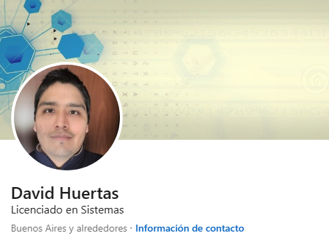

Perfil
Habilidades
- Python
- JavaScript
- Diseño web
- Accesibilidad
- Bases de datos
- Análisis de datos
Soy Licenciado en Sistemas, graduado en la Universidad Nacional de La Plata (UNLP) de la ciudad de Buenos Aires, Argentina.
Nací y crecí en la ciudad de La Plata, donde he desarrollado mi pasión por la programación y la resolución de problemas tecnológicos. Desde temprana edad, me atrajo el mundo de la informática y la posibilidad de crear soluciones a través del código.
Mi enfoque principal se centra en el desarrollo de software, la accesibilidad y me apasiona especialmente el lenguaje de programación Python. Este lenguaje versátil y poderoso me ha permitido abordar variedad de proyectos, desde aplicaciones web hasta tareas de análisis de datos.
Estoy comprometido con la mejora continua y siempre estoy buscando nuevas oportunidades para aplicar mis habilidades y contribuir al mundo tecnológico. Siempre estoy abierto a nuevos desafíos y proyectos que me permitan seguir aprendiendo y aportando al desarrollo tecnológico.
Novedades
Experiencias
CILSA ONG
En mi rol actual en CILSA ONG, lidero la planificación y formulación de proyectos de capacitación, impulsando la importancia de la capacitación en el mundo IT.
Mi labor incluye el monitoreo y relevamiento de datos, aplicando un enfoque analítico para evaluar el impacto de las actividades que se desarrollan.
Además, tengo la responsabilidad de liderar capacitaciones en lenguajes de programación, tales como Python y JavaScript, ofreciendo a los participantes habilidades fundamentales en programación.
Reconociendo la importancia de la inclusión, también aplico mis conocimientos en accesibilidad web, asegurando que las iniciativas tecnológicas de la Organización sean accesibles para todos.
SICOS Informática
En mi experiencia profesional en SICOS Informática, he desempeñado un rol integral en la planificación y gestión de proyectos de capacitación centrado, especialmente sobre programación en Python.
He diseñado y dictado programas de formación en Python y SQL Server, para capacitaciones donde colaboraron Unión Informática y el Ministerio de Trabajo, Empleo y Seguridad Social (MTEySS).
Además, mi labor se ha desarrollado especialmente en el ámbito virtual, haciendo que esta modalidad alcanzace a un público más amplio y facilite el acceso a la capacitación.
Ayudante en T.A.B.I
Me encuentro como Ayudante graduado de la materia "Tecnologias Aplicadas para Business Intelligence (TABI)" de la cátedra LINTI para las carreras de Lic. en Informática y Lic. en Sistemas.
Esta materia es optativa y se dicta en la Facultad de Informática de la UNLP en el último año de las carreras de licenciaturas.
Los conceptos relacionados con esta materia son: Procesamiento de datos, Proceso ETL, Almacenamiento de datos, OLTP vs OLAP, DataWarehouse, Visualización de datos y Analítica de datos.
Herramientas que se utilizan: Pentaho PDI, LookerStudio y Docker.
Proyectos
AcceDOCX (2022)
Es una herramienta que permite accesibilizar un documento de lectura a través de la automatización.
A partir de explorar el tema de la accesibilidad, he tenido la oportunidad de desarrollar este prototipo de herramienta web. Surgió como una iniciativa destinada a abordar los desafíos actuales relacionados con la accesibilidad en documentos de lectura dentro del ámbito educativo.
Promover la concientización sobre la accesibilidad no solo impulsa avances significativos en la creación de herramientas y entornos inclusivos, sino que también refuerza la importancia fundamental de asegurar la igualdad de acceso a la información para todas las personas.
Oportunidades comerciales (2019)
Visualizar mediante un mapa datos relacionados con la actividad comercial durante el periodo 2016-2018 que permita tomar decisiones sobre iniciar un negocio en alguna zona/barrio de CABA.
Se obtuvo los datos relacionados con la actividad comercial: movimiento comercial por zona en cuanto a los cierres y aperturas, por período (entre el 2016 y el 2018).
Finalmente, permite observar tendencias sobre riesgos en zonas, dependiendo de las aperturas, cierres, rubros y período.
Contacto
- Email profesional: dydinformatica.laplata@gmail.com
- GitHub: dhuertas90
- LinkedIn: David Huertas
- WhatsApp: 2216540569
¿Quieres saber sobre programación? ¿Quieres aprender Python? ¿Necesitas ayuda antes de ingresar a la Facultad de Informática? ¿Quieres saber sobre análisis de datos?
¡Contáctame!